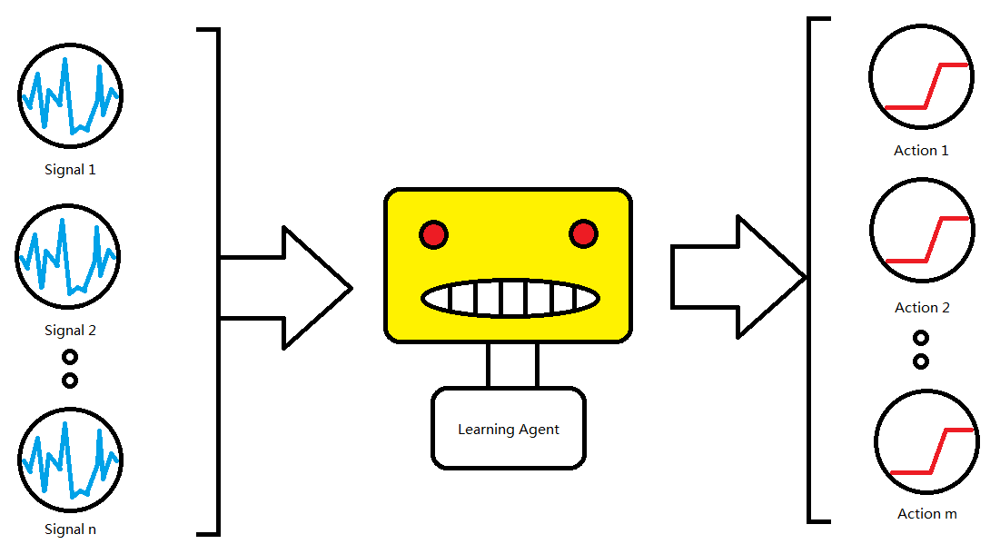

Louis Wan
13th Jan, 2018
Financial market is dynamic and full of uncertainty. Lots of financial industry like hedge funds have to works well with data, like time series data like the price of stocks and futures and multidimension data like fundamental factors of a company. Investment bank hire many financial expert to building strategies for trading but people works emotionally. Algorithmic trading can help expert to do judgement but the signals and indicators are all defined by human. Algo-trading just provides a systematic way to trade according to a human logic. Can we build a reinforcement agent that can recognize signal by itself? This is the propose of this project.
Over hundreds of technical and statistical indicators are used for machine learning based trading agent. After training, the agent can turn the indicators into trading decisions(buy or sell with different amount)
The project will use Sun Life Rainbow mandatory provident fund(MPF) Scheme for finanical trading products. The reason why using Sun Life MPF is because of these funds include different kind of global instrutment such as bonds, stocks and foreign exchanges. Less noise have to tackle with. Secondly, Sun Life MPF service charge is counted and reflected inside the product itself with little entry barrier. Usually, the bond trading is requiring 1.5M cash in security account which is not feasible for majority of people. The twelve funds are provided by Sun Life MPF.
Sun Life Rainbow MPF Scheme
Fund number 1 to 6 will be used for trading only due to the length of data of fund No. 7 to 12 is not enough. For technical indicators, I will use the python package named TA-lib for generating indicators. Since the only close price of fund can be used, some of the indicators will not be available for use. I will use data from 01 Dec 2000 to 31 Dec 2017, total 6240 days. The data will be split into training and testing data in proportion 80/20.
The training data is 4992 days(from 01 Dec 2000 to 02 Aug 2014) and the testing data is 1428 days(from 02 Aug 2014 to 31 Dec 2017). The financial data available in the world (index of major market, fx rate, interest rate) will also included in the dataset.

As shown the graph above, the propose of the learning agent is to transform the finanical product price, insturtment price and their technical indicators into trading decisions but the what kind of machine learning algorithm to be used is still to be discussed. But we can define it as a classification and optimization problem. The following algorithm are suggested to use.
We will use the CAR/MDD for asssessing trend-trading algoritm. The higher the CAR/MDD mean the higher ratio of compound annual return(reward) to maximum drawdown(risk). The definition is stated below. You can find in the script 'car_mdd.py'
import numpy as np import pandas as pd from datetime import datetime def car(_date, X): start = datetime.strptime(_date[0], '%d/%m/%Y') end = datetime.strptime(_date[-1], '%d/%m/%Y') delta = end - start delta_days = delta.days delta_years = float(delta_days) / 365 print(delta_years) return_rate = (X[-1] - X[0])/X[0] return np.power(1 + return_rate, 1.0/delta_years) - 1 def max_drawdown(X): mdd = 0 peak = X[0] for x in X: if x > peak: peak = x dd = (peak - x) / peak if dd > mdd: mdd = dd return mdd if __name__ == '__main__': file_name = 'dataset/HK_Equity_Fund_B_testing.csv' df = pd.read_csv(file_name) date_list = df.Date.values.tolist() price_list = df.Price.values.tolist() _car = car(date_list, price_list) * 100 _mdd = max_drawdown(price_list) * 100 print('Compound Annuel Return = %.4f percent' % _car) print('Maximum DrawDown = %.4f percent' % _mdd) print('CAR/MDD = %.4f' % (_car/_mdd))
The fund with best performance is Sun Life MPF Hong Kong Equity Fund (Class B) in the testing period The compound annuel return is 9.4378 percent and the maximum drawdown of the fund is 28.0587 percent. So, the CAR/MDD is 0.3364. If the learning agent have both high CAR/MDD and the CAR, thats means the learning agent is better than the benchmark.
Step 1: data collection and cleaning Step 2: data pre-processing (PCA, transform) Step 3: implementation of trading software Step 4: implementation of machine learning models Step 5: implementation of evaluation metrics Step 6: implementation of optimization algorithm and cross validation method Step 7: try different model and feature engineering Step 8: conclusion